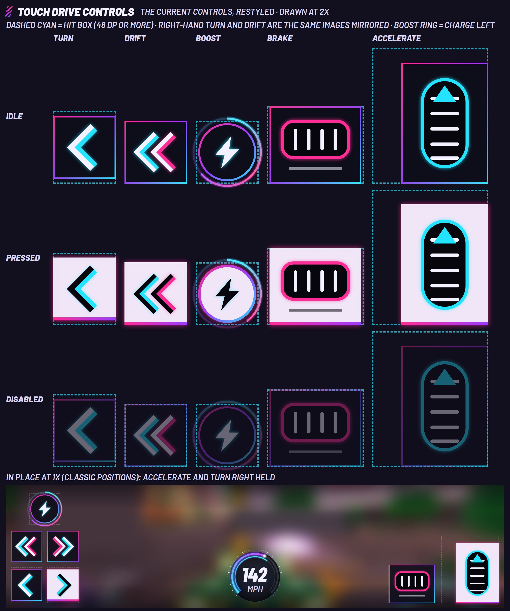

Pulse Racers: Compact (phone) previews, Phase 0
Changes after review 3 (2026-10-09)
Oscar: "ok looking good, other than mobile driving controls, can you take inspo from the current ones, and get those to fit the new theme, colours etc, ensure it all looks consistent. then for the map outer rings, speedo etc can these be more dynamic with colour gradients etc. like we had in previous previews, these can be images". He also asked for the class and sort drop-downs to go from the phone My Vehicles panel.
- Touch controls are the current ones, restyled (c02, c08, c09, c17, c20 sheet). The slanted pedal redesign is withdrawn. The pictograms are Classic's: the upright accelerate pedal (cyan capsule, triangle, five ribs), the wide brake pedal (pink capsule, four ribs, bar beneath), one chevron for turn, two for drift (white with cyan, white with pink), a round boost button with the bolt. Each sits on a square Slate plate with a thin pink-violet-cyan outline, the same colours as the minimap ring. Pressed is the selected-tile look: white plate, dark pictogram, pink base line, pink glow. Disabled is the idle image dimmed. Positions are Classic's. Each control is one baked image (ten uploads: five controls, idle and pressed; right-hand turn and drift are mirrored).
- Gradient rings and gauge, as images. The minimap ring blends pink, violet and cyan round the circle with a soft glow, as in the accepted free-roam mockup; the rank arc is the matching ring in violet to cyan. The speed readout is now the desktop gauge at 92 dp: a speed arc that runs cyan, violet, pink along its sweep with a glow and a bright tip, ticks in three weights, boost as the inner arc. Desktop and phone use the same image files.
- Vehicles list (c03): no class or sort drop-downs; always sorted by rating, highest first.
- Small gradients elsewhere: the selected tile base line and the title mark run pink to violet, the cash chip yellow to a warmer yellow.
- Free roam, driving: UI covers 16.1% at 844x390 (was 14.1% after review 2, budget 18%); in race 15.6%. The plates are filled where the review 2 shapes were outlines, and the brake is back to a Classic-sized pedal, so its top edge reaches 15 dp into the centre 60% x 60% box (0.9%). At 640x360 it is 19.7% and at 568x320 21.8%, over the budget, because controls stay at 48 dp while the screen shrinks.

Changes after review 2 (2026-10-09)
Oscar: "the mobile ui is looking better, for free roam i think it might be better to have the car, garage buttons etc. in the centre top ... i still want the stats visible in the mobile dealership. can we have colours for the different tiers of cars too. the mobile pedals, arrows etc. also need to look a lot more dynamic".
- Free-roam action buttons are one row at the top centre, on foot and driving (c01, c02): five 32 dp glyph buttons in 48 dp hit boxes with 8 dp gaps, clear of the Roblox buttons on the left and of the minimap and cash on the right at every size down to 568x320. The event card and the onboarding objective moved under the Roblox buttons to make room (c17, c18).
- The dealership keeps its stats on screen (c11): a 176 dp column on the right between the status line and the Buy row, with the tier and PI badge, name, price and six rows of label, slim bar and value. Dealership UI covers 27.9% of the screen (was 20.3%). Customise uses the same block in place of the collapsible chip (c12, c13: 26.8%); Paint keeps the chip.
- Tier colours on every tier badge: rail and vehicle-list tiles (also when selected), stat block, race status line, race-entry tier buttons, results, purchase confirm. They are the game's existing tier colours: E grey, D green, C teal, B blue, A amber, S pink.
- Touch controls redrawn as racing controls (rejected in review 3 and replaced; see above): shapes slanted about 12 degrees, steering as two chevron pads with a pink leading edge, a tall accelerate pedal with three chevrons, tread lines and a fill that fades from clear to pink at its base, a smaller, lower brake in red, drift plates with a double chevron and skid marks, boost as a bolt inside a twelve-segment cyan charge ring. Pressed = filled, white base line, glow; disabled = grey outline. Still no panels or labels, hit boxes 48 dp or more, 8 dp gaps, Classic positions. These are image assets in Roblox, not frames.
- Free roam, driving: UI covered 14.1% at 844x390 after review 2 (was 13.2%, budget 18%), centre 60% x 60% empty.
- Race entry: there is no phone vehicle-choice frame yet, so there was no "N of M vehicles eligible" text or class/sort drop-down to remove. The free-roam vehicles list (c03) kept its two drop-downs until review 3.
Changes after review 1 (2026-10-09)
Oscar: "the mobile ui needs a lot of refinement, a lot of the ui looks too big and takes up too much of the screen ... take some inspiration from the current ui".
- Free roam, driving: UI covered 13.2% of the screen after review 1, was 31.4%. Budget 18%. The centre 60% x 60% holds nothing. The current (Classic) phone HUD draws about 29% drawn (35% counting hit boxes).
- Customise: UI covered 20.3% of the screen after review 1, was 40.6%. Budget 45% (55% clear). The current garage on a phone covers about 35%, at 4 to 6 px text.
- Touch controls keep Classic's positions with no panel and no labels (redrawn in review 2). Every target is still 48 dp or more; the dashed boxes show the hit areas, which are larger than what is drawn.
- Minimap 92 dp (was 104) with the driver-rank arc on its upper-left edge. Status is cash only in free roam. Gauge is a number under a thin arc.
- Garage screens: one status line top-right (review 2 puts the stat block back under it), buttons above the rail, rail of 60 dp tiles on the bottom edge.
- Type is smaller: five text sizes from TextSize 26 down to 17 at 844x390 (was 38 down to 17). Nothing is under TextSize 14 at the 0.85 floor.
- Vehicles list is a side panel that hides the minimap and rank.


Drawn at 844x390 dp, landscape only. Cyan dashed lines: device safe area (47 / 47 / 21). Dashed box top-left: Roblox top bar buttons. Faint dashed boxes: 48 dp hit areas. The yellow figure in each frame is measured by the page from its own painted rectangles (fills, outlines, images, text). Backgrounds are blurred stand-ins. Not installed, not approved.
Sources: scripts/ui_restyle/previews/compact (frames.js, compact.css, compact.js, TYPE_ROLES.md, CURRENT_PHONE_UI.md). Re-render with render_compact.py, then build_index.py. Pre-review frames: previous/.
Frames at 844x390

Minimap 92 dp top-right with the driver-rank arc on its upper-left edge (review 3: both are the baked gradient ring images, pink to violet to cyan). Cash only, under the map. Review 2: the five 32 dp icon buttons (48 dp hit boxes, 8 dp gaps) are one row at the top centre, clear of the Roblox buttons and of the map. Bottom corners left to the Roblox thumbstick and jump.
UI covers 5.7% of the screen (94.3% clear), 10.0% before review 1; centre 60% x 60%: 0%. Smallest TextSize 18.

Review 3: the touch controls are the current (Classic) ones restyled: the same pedal, chevron and bolt pictograms on square Slate plates with a pink-violet-cyan outline (accelerate and boost shown pressed: white plate, pink base line, glow). The speed readout is the desktop gauge at 92 dp with gradient arcs. Positions are Classic's: turn bottom-left with drift above and boost above that, pedals bottom-right, speed bottom-centre with Exit beside it.
UI covers 16.1% of the screen (83.9% clear), 14.1% after review 2, 13.2% after review 1, 31.4% before review 1; centre 60% x 60%: 0.9%. Smallest TextSize 17.

Review 3: no class or sort drop-downs; a title, the count and Close, and the list is always sorted by rating, highest first. Side panel on the right; the minimap and rank are hidden while it is open, the cash chip moves beside it and the action row centres in the space left of it. Tier badges carry the tier colour, also on the selected (white) tile.
UI covers 27.1% of the screen (72.9% clear). Smallest TextSize 17.

Narrower (400 dp). Options are 36 dp tall with 48 dp hit boxes.
UI covers 36.6% of the screen (63.4% clear). Smallest TextSize 17.

Packs shown locked because cash products are not enabled.
UI covers 31.4% of the screen (68.6% clear). Smallest TextSize 17.

Tabs take the title's place so five 48 dp rows fit (three before). One line per event.
UI covers 56.8% of the screen (43.2% clear). Smallest TextSize 17.

Same parts, smaller type; the three buttons are one row on the bottom edge.
UI covers 53.8% of the screen (46.2% clear). Smallest TextSize 17.

Three panels and one button row. Tier buttons are 36 dp with 48 dp hit boxes, filled with the tier colour (white underline = done, white outline = chosen, dimmed = locked). There is no phone vehicle-choice frame, so there was no eligible count or drop-down to remove.
UI covers 55.7% of the screen (44.3% clear). Smallest TextSize 17.

Position and lap under the Roblox buttons, timer top-centre, three-row board, Reset and Quit as icons. Review 3: the restyled Classic controls and the gradient gauge (accelerate and turn right pressed, boost charge ring at 30%). The top of the brake plate reaches 15 dp into the centre 60% x 60% box; nothing else does.
UI covers 15.6% of the screen (84.4% clear), 13.7% after review 2, 12.7% after review 1, 31.7% before review 1; centre 60% x 60%: 0.9%. Smallest TextSize 17.

The count is the only thing in the centre; controls are in their disabled state until GO.
UI covers 15.8% of the screen (84.2% clear). Smallest TextSize 17.

Cash and XP as image digits, results list on the right, buttons bottom-right. The car's tier badge is in the tier colour.
UI covers 26.5% of the screen (73.5% clear). Smallest TextSize 17.

Review 2: the stats are always visible. A 176 dp column on the right, between the status line and the Buy row: tier and PI badge in the tier colour, name, price, then six rows of label, slim bar and value. The car keeps the middle; rail tiles carry tier-colour badges.
UI covers 27.9% of the screen (72.1% clear), 20.3% after review 1, 40.7% before review 1. Smallest TextSize 17.

All seven slots fit the rail at 844 dp. Review 2: the same always-visible stat block as the dealership replaces the collapsible chip (it fits without touching the car; Paint keeps the chip because paint does not change stats).
UI covers 26.8% of the screen (73.2% clear), 20.3% after review 1, 40.6% before review 1. Smallest TextSize 17.

The stat block widens to 208 dp to show the preview gains in cyan. Tiles carry the price or OWNED in the corner.
UI covers 28.4% of the screen (71.6% clear), 27.0% after review 1, 40.1% before review 1. Smallest TextSize 17.

Swatches are the rail, with the channel switch at its left end. Sliders and buttons share the row above. Area stepper sits beside the tabs.
UI covers 20.2% of the screen (79.8% clear), 27.7% before review 1. Smallest TextSize 17.

316 dp wide, four fact rows, two buttons.
UI covers 46.6% of the screen (53.4% clear). Smallest TextSize 17.

Controls are a column of icon buttons on the right; the key is a small card; the hint is a line of text.
UI covers 13.6% of the screen (86.4% clear). Smallest TextSize 17.

The event card moved under the Roblox buttons because the top centre now holds the action row. START sits above the pedals under the right thumb.
UI covers 19.6% of the screen (80.4% clear), 42.1% before review 1; centre 60% x 60%: 2.7%. Smallest TextSize 17.

Objective is one line under the Roblox buttons, toast under the action row. The callout is a tutorial step with the dimmer, so it is allowed into the centre.
UI covers 24.7% of the screen (75.3% clear). Smallest TextSize 17.

Unchanged apart from type sizes.
UI covers 14.6% of the screen (85.4% clear). Smallest TextSize 17.

Play keeps a full 48 dp height.
UI covers 12.4% of the screen (87.6% clear). Smallest TextSize 17.

The current controls restyled: turn, drift, boost, brake and accelerate at 2x in idle, pressed and disabled states, each inside its dashed hit box, then the whole set in place at 1x. A sheet, not a device frame, so it has no coverage figure.
Free-roam HUD, driving: other phone sizes

UI covers 15.6% of the screen (84.4% clear); centre 60% x 60%: 0.9%. Smallest TextSize 18.

UI covers 19.7% of the screen (80.3% clear); centre 60% x 60%: 0%. Smallest TextSize 15.

UI covers 21.8% of the screen (78.2% clear); centre 60% x 60%: 0%. Smallest TextSize 14.
Race menu, list: other phone sizes

UI covers 55.7% of the screen (44.3% clear). Smallest TextSize 18.

UI covers 68.5% of the screen (31.5% clear). Smallest TextSize 15.

UI covers 65.3% of the screen (34.7% clear). Smallest TextSize 14.
Customise, parts: other phone sizes

UI covers 26.3% of the screen (73.7% clear). Smallest TextSize 18.

UI covers 31.5% of the screen (68.5% clear). Smallest TextSize 15.

UI covers 32.8% of the screen (67.2% clear). Smallest TextSize 14.